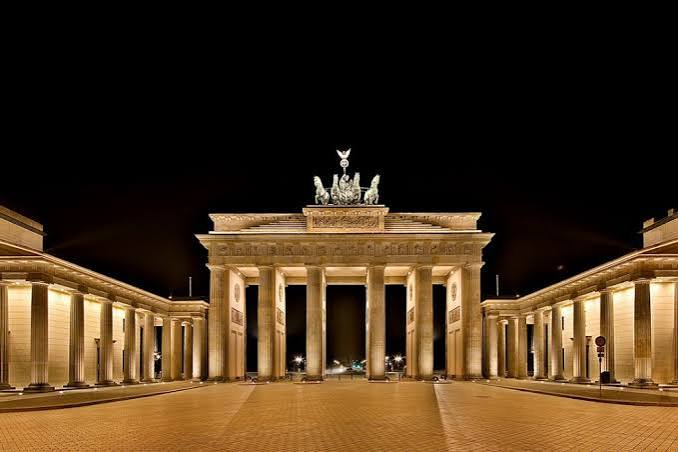
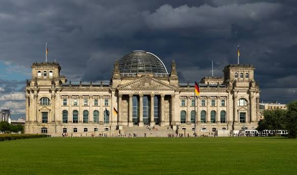
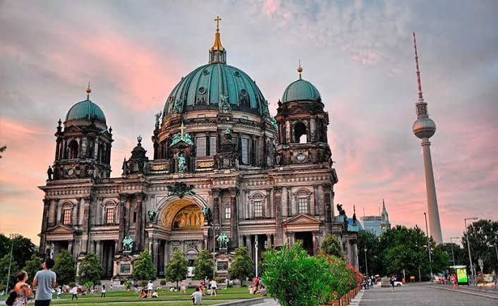

La Puerta de Brandeburgo es un majestuoso monumento neoclásico y principal icono de Berlín, Alemania . Ubicada en la Pariser Platz,
fue construida entre 1788 y 1791 por orden de Federico Guillermo II de Prusia. Mide 26 metros de alto y 62,5 metros de ancho

El Edificio del Reichstag, sede del Bundestag (Parlamento alemán) , es un icónico símbolo de la historia y la democracia en Alemania.
Su mayor atractivo turístico es su espectacular cúpula de cristal, diseñada por Norman Foster , que ofrece vistas panorámicas de 360 grados de Berlín
y permite observar la sala de plenos en funcionamiento.

La Catedral de Berlín (Berliner Dom), situada en la Isla de los Museos frente al jardín Lustgarten, es el templo protestante más grande de la ciudad.
Destaca por su cúpula color cobre y su rica ornamentación interior, además de albergar la cripta de la dinastía Hohenzollern, con casi
100 sarcófagos de reyes y príncipes prusianos